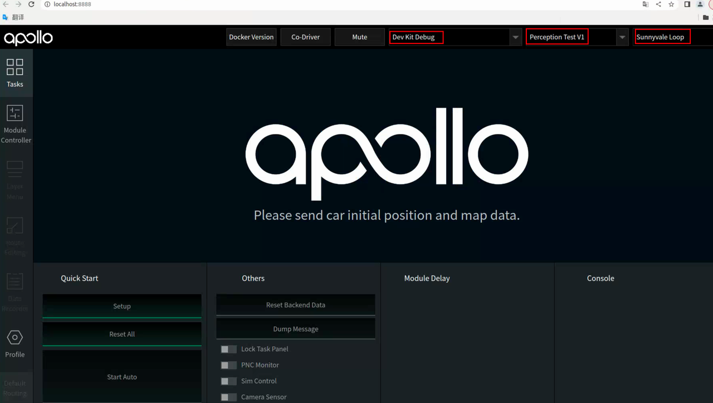
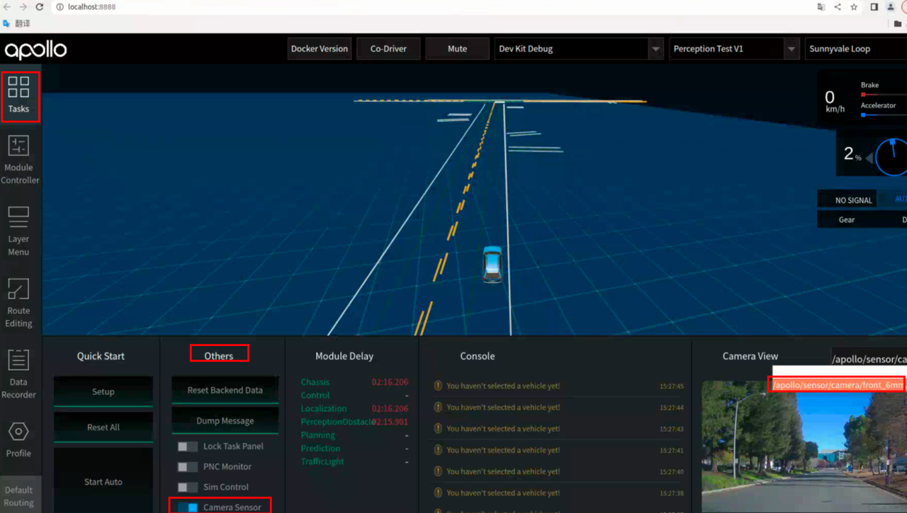

实验步骤
任务一
部署感知模型
step1: 进入apollo容器
在 Ubuntu 系统中打开命令行工具，进入~/apollo 目录，执行启动 docker 环境指令。
cd ~/apollo
sudo bash ./docker/scripts/dev_start.sh # 首次运行后，加-l参数可以节省时间
sudo bash ./docker/scripts/dev_into.sh
容器外：
step2: 安装模型
通过以下命令把训练好的模型部署到Apollo，其中SMOKE_paddle.zip是训练好的模型打包文件。执行完成命令之后，提示安装成功，则表示模型安装成功。
python3 modules/tools/amodel/amodel.py install SMOKE_paddle.zip
step3: 修改配置文件
模型文件会被安装至/apollo/modules/perception/production/data/perception/camera/models/yolo_obstacle_detector/目录下，使用vscode修改该路径下的 smoke-config.pt 配置文件中的下述内容（需要修改模型的类型、权重参数文件路径，模型的结构，输入输出的接口）：
model_param {
model_name: "./3d-r4-half_caffe"
model_type: "PaddleNet"
weight_file: "../SMOKE_paddle/smoke.pdiparams"
proto_file: "../SMOKE_paddle/smoke.pdmodel"
anchors_file: "anchors.txt"
types_file: "types.txt"
calibratetable_root: "./3d-r4-half_caffe"
confidence_threshold: 0.25
offset_ratio: 0.0
cropped_ratio: 1.185185185185
resized_width: 960
aligned_pixel: 32
min_2d_height: 10
min_3d_height: 0.1
ori_cycle: 1
with_box3d: true
light_swt_conf_threshold: 0
light_vis_conf_threshold: 0
with_lights: false
with_ratios: false
# num_areas: 4
border_ratio: 0.01
}
net_param {
det1_loc_blob: "concat_8.tmp_0"
det1_obj_blob: "obj_pred"
det1_cls_blob: "cls_pred"
det1_ori_blob: "ori_pred"
det1_dim_blob: "dim_pred"
input_data_blob: "images"
input_ratio_blob: "down_ratios"
input_instric_blob: "trans_cam_to_img"
feat_blob: "conv3_3"
}
nms_param {
type: "NormalNMS"
threshold: 0.5
sigma: 0.4
inter_cls_nms_thresh: 0.6
}
运行感知模块
step4: 启动Apollo DreamView
在Apollo容器内启动DreamView。DreamView是自动驾驶系统的可视化界面。
bash scripts/bootstrap.sh
bash scripts/bootstrap.sh restart
http://localhost:8888/地址出现DreamView页面，选择正确的模式、车型、地图。

step5: 启动Perception和Transform模块
点击Dreamview左侧状态栏 Module Controller 模块启动 transform 模块：
source /apollo/cyber/setup.bash
cyber_launch start /apollo/modules/transform/launch/static_transform.launch
# 打开新终端，重新用dev_into.sh进入Apollo容器
sudo bash ./docker/scripts/dev_into.sh
source /apollo/cyber/setup.bash
mainboard -d /apollo/modules/perception/production/dag/dag_streaming_perception_camera.dag
基于数据包验证感知结果
step6: 播放测试数据包
# Apollo容器内
source /apollo/cyber/setup.bash
# 播放数据包：需要使用 -k 参数屏蔽掉数据包中包含的感知通道数据,-p 参数提前加载数据包，使回放更加流畅。
cyber_recorder play -p 10 -f ./data/bag/sensor_rgb.record -k /apollo/sensor/camera/front_12mm/image /apollo/sensor/camera/rear_6mm/image /perception/vehicle/obstacles /apollo/prediction/perception_obstacles /apollo/perception/obstacles /perception/obstacles /apollo/prediction
step7: 查看感知结果
可视化结果输出：在 DreamView 中查看感知结果。 将 Tasks 中的 Lock Task Panel按钮关闭，Camera Sensor 按钮打开，在 Camera View 中选择相应的相机通道数据。 
mainboard -d /apollo/modules/perception/production/dag/dag_streaming_perception_camera.dag的终端,输出报错如下。这是因为已经播放过一次数据包了，第二次播放时，apollo认为收到了过期的旧数据，没有进行识别。
mainboard -d /apollo/modules/perception/production/dag/dag_streaming_perception_camera.dag